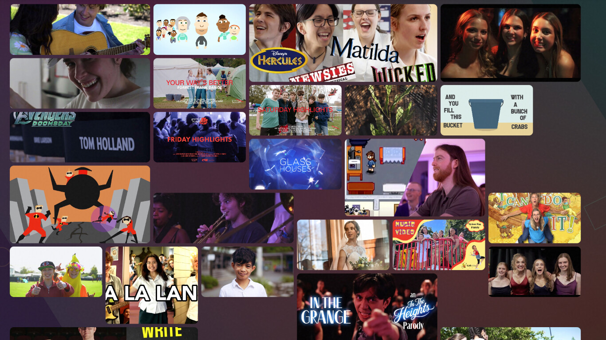
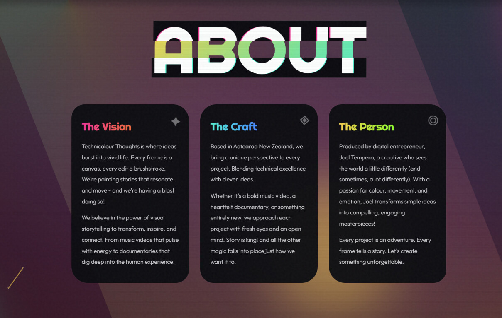

Technicolour
Thoughts
A digital production studio based in Christchurch, NZ. Creating content for artists, businesses, and communities — we built a site to match the energy.
Capturing the creative spark
Technicolour Thoughts serves a wide audience, creating content for artists, businesses and communities. The website we made captures that creative spark — a wild colour palette, fun interactive video cards, and even a sparkly cursor. This 2-page site is jam-packed with character and creativity.

Wild Palette
Vivid colours that pop
Video Cards
Interactive portfolio pieces
Sparkly Cursor
Playful micro-interaction
Fully Responsive
Works everywhere
Small but mighty
Sometimes two pages is all you need. We focused on making every pixel count — the landing page hooks you with movement and colour, while the portfolio page lets the work speak for itself through hover-activated video previews and a clean grid layout.

See it live
Jump in and explore the colour for yourself.
Visit technicolour.nz →